Diagramm durch Neuimport von Daten aus Datenbank aktualisieren
Zusammenfassung
Dieses Tutorial zeigt, wie Daten aus der Datenbank importiert und diese Daten analysiert und grafisch dargestellt werden. Es wird eine Schaltfläche zum Diagramm hinzugefügt, um die Datenbankanfrage zu aktualisieren und Daten mit Hilfe von Origins LabTalk-Skript erneut zu importieren.
Die SQL-Datenbank, die hier verwendet wird, ist die AdventureWorks-Datenbank. Einzelheiten dazu, wie eine AdventureWorks-Datenbank verbunden wird, finden Sie auf der Webseite von CodePlex.
 |
Die Schritte im Tutorial dienen nur Demonstrationszwecken, was Anwender lokal mit ihrer Datenbank machen könnten. Bitte befolgen Sie die Schritte nicht.
|
Was Sie lernen werden
Dieses Tutorial zeigt Ihnen, wie Sie:
- Daten aus einer Datenbank importieren unter Verwendung von LabTalk-Variablen in der SQL-Anfrage, die den Datenbereich der Anfrage definieren.
- eine Pivot-Tabelle erstellen und ein Diagramm zum Analysieren der Daten zeichnen.
- eine Schaltfläche zum Diagramm hinzufügen, um den Datenbereich der Anfrage zu modifizieren und einen neuen Import aus der Datenbank durchzuführen.
Schritte
Angenommen, Sie haben bereits einen SQL-Server mit dem Namen AdventureWorks2008 auf einem Server noho eingerichtet.
Daten aus einer Datenbank importieren
- Öffnen Sie ein neues Projekt. Öffnen Sie den SQL-Editor, indem Sie auf die Schaltfläche SQL-Editor öffnen auf der Symbolleiste Datenbankzugriff klicken.

- Wählen Sie im Menü Datei: Verbindungszeichenkette bearbeiten und geben Sie die Verbindungszeichenkette unten im Textfeld ein.
Provider=SQLOLEDB.1; Password=labtalk2015; Persist Security Info=TRUE; USER ID=CONNECT; Initial Catalog=AdventureWorks2008; DATA SOURCE=noho
- Klicken Sie auf die Schaltfläche Test, um zu prüfen, ob die Verbindung in Ordnung ist. Wenn er in Ordnung ist, klicken Sie auf die Schaltfläche OK, um die Verbindung zur Datenbank herzustellen.
- Wählen Sie im Menü des SQL-Editors Anfrage: LabTalk..., um den Dialog Einstellungen der Unterstützung von LabTalk zu öffnen. Aktivieren Sie in diesem Dialog das Kontrollkästchen Substitution durch LabTalk (%, $) aktivieren und geben Sie folgendes Skript in das Textfeld ein.
string pastFrom$ = ""; string pastTo$ = ""; string curFrom$ = ""; string curTo$ = ""; if(exist(strPast1$, 18) == 18) // Check if strPast1$ has value { // If strPast1$ has value pastFrom$ = strPast1$; // Assign strPast1$ to pastFrom$ } else // If strPast1$ is not defined { pastFrom$ = "1/1/2003"; // Assign a const string to pastFrom$ } if(exist(strPast2$, 18) == 18) { pastTo$ = strPast2$; } else { pastTo$ = "3/31/2003"; } if(exist(strCurrent1$, 18) == 18) { curFrom$ = strCurrent1$; } else { curFrom$ = "4/1/2003"; } if(exist(strCurrent2$, 18) == 18) { curTo$ = strCurrent2$; } else { curTo$ = "6/30/2003"; }
- 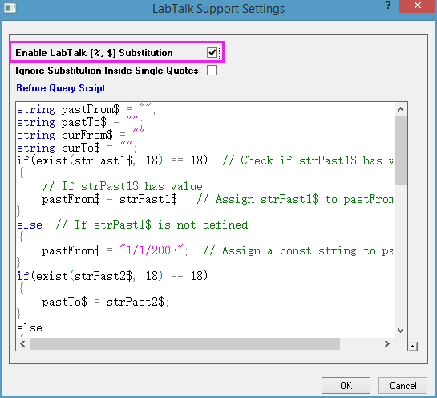
- Klicken Sie auf OK, um zum SQL-Editor zurückzukehren. Geben Sie im rechten Textfeld die folgenden SQL-Aussagen ein.
SELECT OrderDateTotalDueAndProductSubcategoryID.OrderDate AS 'Order Date', 'Date Range' = CASE WHEN OrderDateTotalDueAndProductSubcategoryID.OrderDate < '%(curFrom$)' THEN 'Past' ELSE 'Current' END, Production.ProductSubcategory.Name AS 'Subcategory Name', OrderDateTotalDueAndProductSubcategoryID.TotalDue AS 'Total Due' FROM (SELECT OrderDateAndTotalDue.OrderDate, OrderDateAndTotalDue.TotalDue, Production.Product.ProductSubcategoryID FROM (SELECT Sales.SalesOrderHeader.OrderDate, Sales.SalesOrderDetail.ProductID, Sales.SalesOrderHeader.TotalDue FROM Sales.SalesOrderHeader INNER JOIN Sales.SalesOrderDetail ON Sales.SalesOrderHeader.SalesOrderID=Sales.SalesOrderDetail.SalesOrderID WHERE (Sales.SalesOrderHeader.OrderDate BETWEEN '%(pastFrom$)' AND '%(pastTo$)' OR Sales.SalesOrderHeader.OrderDate BETWEEN '%(curFrom$)' AND '%(curTo$)')) AS OrderDateAndTotalDue INNER JOIN Production.Product ON OrderDateAndTotalDue.ProductID=Production.Product.ProductID) AS OrderDateTotalDueAndProductSubcategoryID INNER JOIN Production.ProductSubcategory ON OrderDateTotalDueAndProductSubcategoryID.ProductSubcategoryID=Production.ProductSubcategory.ProductSubcategoryID
- 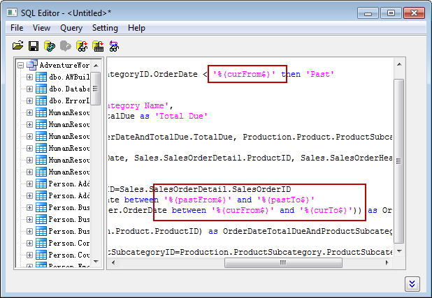
Wie Sie sehen können, werden in den Aussagen drei LabTalk-Variablen verwendet.
- Klicken Sie einfach auf die letzte Schaltfläche der Symbolleiste und Sie können die Substitutionen sehen.
- 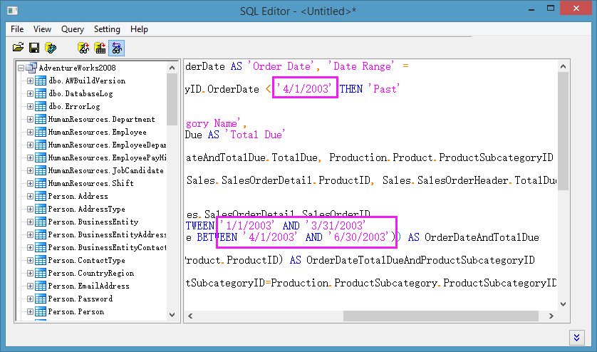
- Wählen Sie im Menü Datei: Im aktiven Arbeitsblatt speichern, um diese Einstellungen im Arbeitsblatt zu speichern. Klicken Sie auf die Schaltfläche Daten in Arbeitsblatt importieren
 , um die Daten in das Arbeitsblatt zu importieren, und schließen Sie dann den SQL-Editor. Sie können die importierten Daten sehen, wie das folgende Bild zeigt. Ein gelbes Symbol wird oben links im Arbeitsblatt angezeigt, um zu kennzeichnen, dass eine Datenbankverbindung im Arbeitsblatt gespeichert ist.
, um die Daten in das Arbeitsblatt zu importieren, und schließen Sie dann den SQL-Editor. Sie können die importierten Daten sehen, wie das folgende Bild zeigt. Ein gelbes Symbol wird oben links im Arbeitsblatt angezeigt, um zu kennzeichnen, dass eine Datenbankverbindung im Arbeitsblatt gespeichert ist.
- 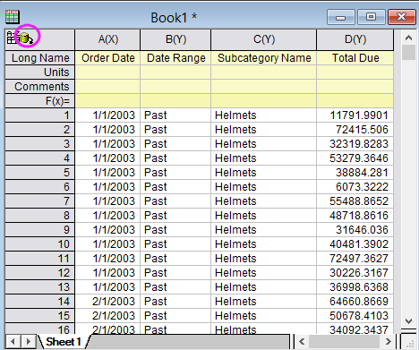
Pivot-Tabelle erstellen und Spaltenberechnungen durchführen
- Beginnen Sie mit den importierten Daten. Markieren Sie Spalte C und wählen Sie im Menü Worksheet: Pivot-Tabelle, um den Dialog Data Manipulation\Worksheet: wpivot zu öffnen.
- Setzen Sie die Neuberechnung auf Auto.
- Wählen Sie Spalte B für Spaltenquelle der Pivot-Tabelle, indem Sie auf die dreieckige Schaltfläche rechts klicken.
- Wählen Sie Summe unter Zusammenfassen nach. Sie können oben dann die Zeile Datenquelle der Pivot-Tabelle sehen. Wählen Sie einfach Spalte D für sie, indem Sie auf die dreieckige Schaltfläche rechts klicken.
- Erweitern Sie den Knoten Optionen und setzen Sie Ausgabespalten sortieren auf Kein.
- 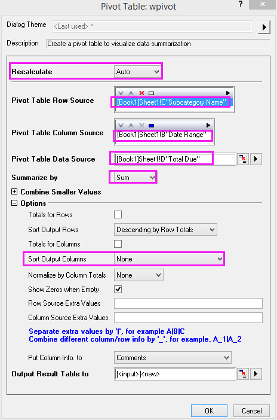
- Klicken Sie auf die Schaltfläche OK, um die Pivot-Tabelle mit Hilfe der Einstellungen zu erstellen.
- 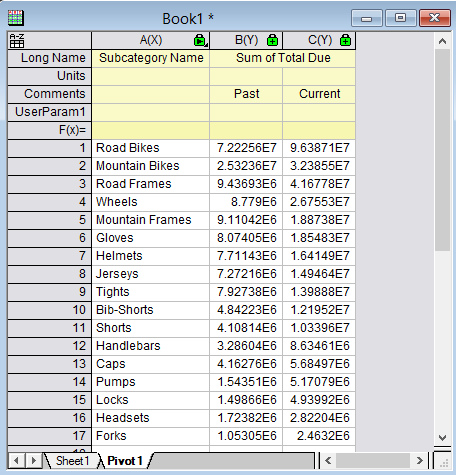
- Klicken Sie zweimal auf die Schaltfläche Neue Spalten anhängenColumns , um zwei Spalten hinzuzufügen.
- Ändern Sie ihren Langnamen in Percent Change bzw. Gain/Loss.
- In F(x)= Zelle der Spalte D:
- Wenn Sie Origin 2017 verwenden, geben Sie ein:
B==0? 100 : 100*(C-B)/B
- Wenn Sie Versionen vor Origin 2017 verwenden, geben Sie ein:
col(B)==0? 100 : 100*(col(C)-col(B))/col(B)
- In F(x)= Zelle der Spalte E:
- Wenn Sie Origin 2017 verwenden, geben Sie ein:
D > 0? 12 : 2
- Wenn Sie Versionen vor Origin 2017 verwenden, geben Sie ein:
col(D) > 0? 12 : 2
-
Das Ergebnis sieht folgendermaßen aus:
- 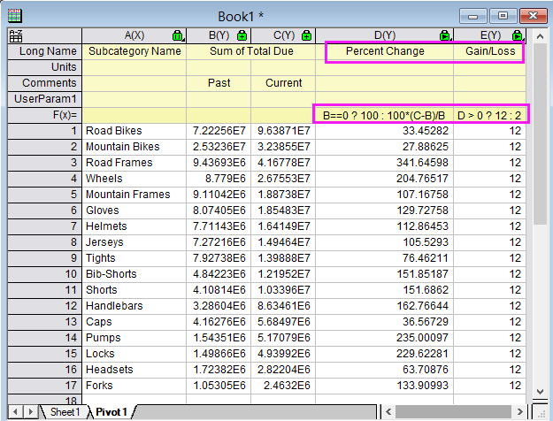
Diagramm erstellen und benutzerdefiniert anpassen
- Markieren Sie im Arbeitsblatt Pivot1 die Spalten C und D und wählen Sie im Menü Zeichnen: Mehrere Felder: Stapeln.
- Ändern Sie im Dialog die Einstellungen, wie folgt.
- 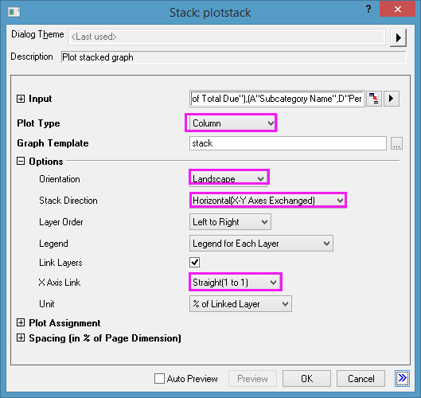
- Klicken Sie auf OK. Es wird ein Diagramm mit zwei Feldern erstellt.
- 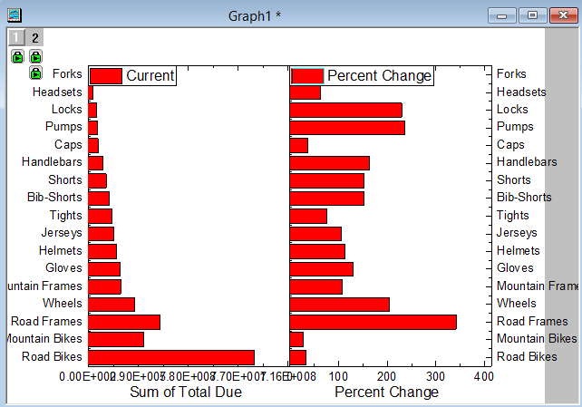
- Klicken Sie doppelt auf die untere Achse im linken Bedienfeld. Setzen Sie auf der Registerkarte Beschriftung der Hilfsstriche den Teilungsfaktor auf 1000000 (eine Million) und das Suffix auf M. Setzen Sie auf der Registerkarte Skalierung Von und Bis auf die Werte 0 bis 120. Setzen Sie den Typ der Großen Hilfsstriche auf Nach Inkrement und den Wert auf 20. Wählen Sie Vertikal im linken Bedienfeld des Dialogs Achsen. Setzen Sie Neuskalierung auf Auto. Klicken Sie auf OK.
- Klicken Sie doppelt auf die untere Achse im rechten Bedienfeld. Setzen Sie auf der Registerkarte Skalierung die Werte für Von und Bis auf -100 und 400. Setzen Sie den Typ der Großen Hilfsstriche auf Nach Inkrement und den Wert auf 100. Wählen Sie Vertikal im linken Bedienfeld des Dialogs Achsen. Setzen Sie Neuskalierung auf Auto. Gehen Sie zur Registerkarte Gitternetze. Im linken Bedienfeld wird jetzt Horizontal gezeigt. Aktivieren Sie das Kontrollkästchen Y=0 unten auf der Registerkarte. Wählen Sie auf der Registerkarte Spezielle Hilfsstriche die Option Unten im linken Bedienfeld. Setzen Sie in der Zeile Achsenbeginn die Option Zeigen auf Verstecken. Ansonsten überschneidet sich die letzte Hilfsstrichsbeschriftung des linken Diagramms mit der ersten Beschriftung des rechten Diagramms. Klicken Sie auf OK.
- Löschen Sie Legenden, die Hilfsstrichsbeschriftungen der rechten Achse etc., so dass das Diagramm folgendermaßen aussieht.
- 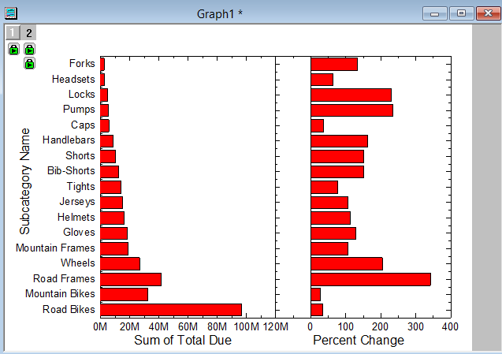
- Legen Sie die Füllfarbe des linken Balkendiagramms auf Zyan hell fest.
- Legen Sie die Füllfarbe des rechten Balkendiagramms auf den Index von Spalte E (Gain/Loss) fest. Aktivieren Sie die Beschriftungen und setzen Sie Beschriftungsformat auf Benutzerdefiniert und die Formatzeichenkette auf $(Y, .1)%, um den Y-Wert mit 1 Dezimalstelle und dem Suffix % anzuzeigen.
- Sie können die Achse benutzerdefiniert anpassen, zum Beispiel die Achsenrahmen oben, rechts und unten löschen. Blenden Sie die Gitternetzlinien ein. Verbergen Sie die großen und kleinen Hilfsstriche auf der linken Achse etc. Das Diagramm sieht dann folgendermaßen aus:
- 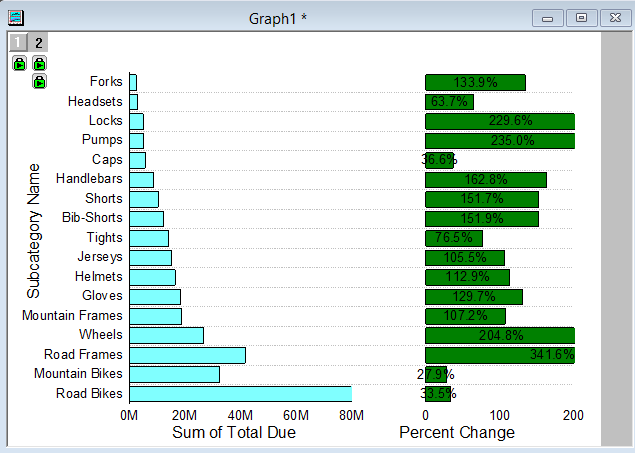
Schaltfläche zum Ausführen eines LabTalk-Skripts hinzufügen
- Klicken Sie mit der rechten Maustaste unten rechts auf das Diagramm und wählen Sie Text hinzufügen. Geben Sie Update ein, um eine Textbeschriftung zu erstellen.
- Klicken Sie mit der rechten Maustaste auf den Text Update und wählen Sie Einstellungen im Kontextmenü, um den Dialog Textobjekt zu öffnen. Gehen Sie zur Registerkarte Programmierung. Hinweis: Wählen Sie in Versionen vor Origin 2017 Programmierablauf im Menü, um den Dialog Programmierablauf zu öffnen.
- Setzen Sie Kriterien für Skriptausführung auf Mausklick und geben Sie das folgende Skript in das untere Textfeld ein. Klicken Sie auf OK.
double pastDate1 = date(1/1/2003); double pastDate2 = date(3/31/2003); double currentDate1 = date(4/1/2003); double currentDate2 = date(6/30/2003); // Check if strPast1$, strPast2$, strCurrent1$, strCurrent2$ exist the same time if((exist(strPast1$, 18) == 18) && (exist(strPast2$, 18) == 18) && (exist(strCurrent1$, 18) == 18) && (exist(strCurrent2$, 18) == 18)) { // If yes, set to double value, so to show on the dialog pastDate1 = date(strPast1$); pastDate2 = date(strPast2$); currentDate1 = date(strCurrent1$); currentDate2 = date(strCurrent2$); } // Dialog for date settings GetN (Last Seaon) :@G (From) pastDate1:@FD0 (To) pastDate2:@FD0 (-) :@G (Current Seaon) :@G (From) currentDate1:@FD0 (To) currentDate2:@FD0 (-) :@G (Set Date); // Get the set dates, and convert to string string strPast1$ = $(pastDate1, D0); string strPast2$ = $(pastDate2, D0); string strCurrent1$ = $(currentDate1, D0); string strCurrent2$ = $(currentDate2, D0); // Reimport data from database according to the set dates dbimport iw:=[book1]sheet1!; range rPivot = [Book1]Pivot1!; // Pivot table range layer.x.to = rPivot.maxRows+0.5; // Set to value of vertical axis rPivot.runfilter(); // Run the data filter
Das Textobjekt verwandelt sich in eine Schaltfläche und das Skript darin wird ausgeführt, wenn Sie auf die Schaltfläche klicken.
- 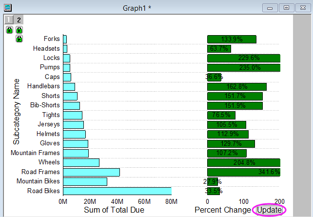
- Klicken Sie auf diese Schaltfläche. Ein Dialog mit den Standarddaten (zum ersten Mal, falls nicht zum ersten Mal, die beim letzten Mal festgelegten Daten) wird aufgerufen.
- Ändern Sie den Zeitraum. Geben Sie zum Beispiel für Last Season Von 01.01.2004 Bis 31.03.2004 ein und für Current Season Von 01.04.2004 Bis 30.06.2004.
- 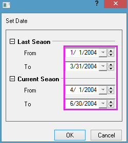
- Klicken Sie auf OK. Die Daten aus dem festgelegten Datenbereich werden erneut ins Arbeitsblatt importiert und das Arbeitsblatt Pivot1 wird aktualisiert. Das Diagramm wird ebenfalls aktualisiert. Die Balkenfarbe wird auf den Index der Spalte Gain/Loss im Blatt Pivot1 gesetzt. Sie können einfach feststellen, dass es bei einem Produkt einen Verlust gibt.
- 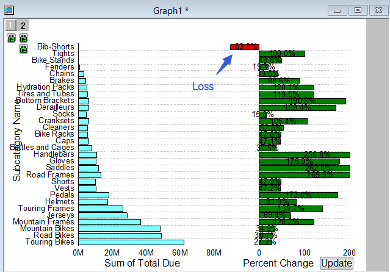